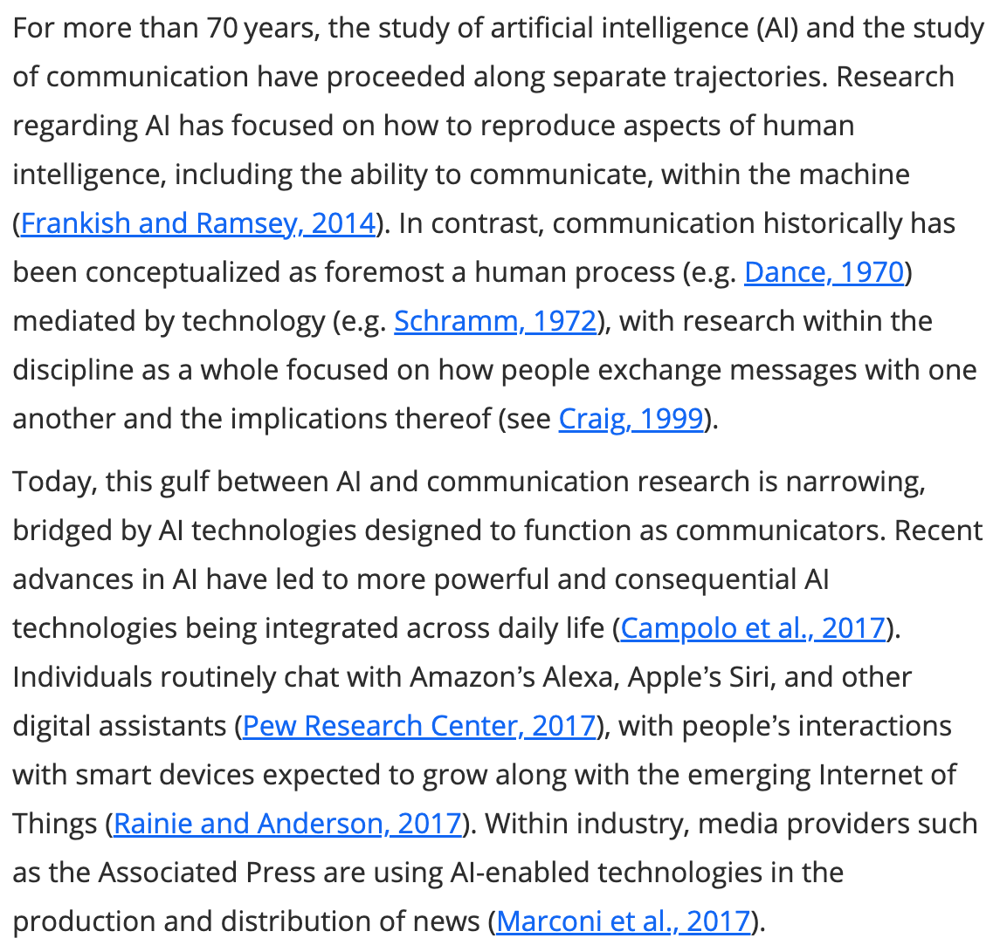

| Sitzung | Datum | Thema (synchron) |
|---|---|---|
| 1 | 30.10.2024 | Kick-Off |
| 2 | 06.11.2024 | Workflow & Analysestrategie I |
| 3 | 13.11.2024 | Workflow & Analysestrategie II |
| 4 | 20.11.2024 | Gruppenarbeit |
| 5 | 27.11.2024 | All things R: Datensatzvorstellung & Refresher |
| 6 | 04.12.2024 | Update zum Workflow I |
| 7 | 11.12.2024 | Gruppenarbeit |
| 8 | 18.12.2024 | All things R |
| 9 | 08.01.2025 | Update zum Workflow II |
| 10 | 15.01.2025 | Gruppenarbeit |
| 11 | 22.01.2025 | All things R |
| 12 | 27.01.2025 | Sondertermin: Vorstellung Projektseminar |
| 13 | 29.01.2025 | Abschlusspräsentation (inkl. Feedback) |
| 1 | 05.02.2025 | 🏁 Semesterabschluss: Projektbericht & Evaluation |
All things
Session 06
18.12.2024
Seminarplan
Agenda
PDF to Text
Kurze Vorstellung des GROBID-Tools
GeneRation Of BIbliographic Data
Kurze Vorstellung von GROBID (2008)
- kostenlose Opens Source Machine-Learning-Bibliothek zur Extraktion, Analyse und Umstrukturierung von Rohdokumenten wie PDFs in strukturierte XML/TEI-codierte Dokumente
- Besonderem Fokus auf technische und wissenschaftliche Publikationen
- Zentrales Feature: “Full text extraction and structuring from PDF articles, including a model for the overall document segmentation and models for the structuring of the text body (paragraph, section titles, reference and footnote callouts, figures, tables, data availability statements, etc.).”
GROBID in Aktion
Vorstellung des Demo-Servers
- Tool ermöglicht niedrigschwellige Möglichkeit der PDF-Konvertierung (inklusive verschiedener Anpassungsoptionen)
- Export im TEI-Format (spezielles XML-Format bzw. internationaler Standart zur digitalen Darstellung von Texten)
Import der XML
Verarbeitung der TEI-Datei in R (I)
{xml_document}
<TEI space="preserve" schemaLocation="http://www.tei-c.org/ns/1.0 https://raw.githubusercontent.com/kermitt2/grobid/master/grobid-home/schemas/xsd/Grobid.xsd" xmlns="http://www.tei-c.org/ns/1.0" xmlns:xsi="http://www.w3.org/2001/XMLSchema-instance" xmlns:xlink="http://www.w3.org/1999/xlink">
[1] <teiHeader xml:lang="en">\n\t\t<fileDesc>\n\t\t\t<titleStmt>\n\t\t\t\t<ti ...
[2] <text xml:lang="en">\n\t\t<body>\n<div xmlns="http://www.tei-c.org/ns/1.0 ...Extraktion der Informationen
Verarbeitung der TEI-Datei in R (II)
# Define the namespace
ns <- c(tei = "http://www.tei-c.org/ns/1.0")
# Extract the title
title <- xml_text(xml_find_first(doc, "//tei:titleStmt/tei:title[@type='main']",ns))
# Print title
print(title)[1] "Artificial intelligence and communication: A Human-Machine Communication research agenda"# Extract the DOI
doi <- xml_text(xml_find_first(doc,"//tei:idno[@type='DOI']",ns))
# Print DOI
print(doi)[1] "10.1177/1461444819858691"Export des Volltextes
Weiterverarbeitung der Daten in R (III)
# Extract the body text excluding abstract, author information, and references
body_nodes <- xml_find_all(doc, "//tei:text/tei:body//tei:div/tei:p", ns)
body_text <- paste(xml_text(body_nodes), collapse = " ")
# Construct the tibble
result <- tibble(
title = title,
doi = doi,
body = body_text
)
# Print the result
print(result)# A tibble: 1 × 3
title doi body
<chr> <chr> <chr>
1 Artificial intelligence and communication: A Human-Machine Commun… 10.1… "For…Vergleich der Ergebnisse
Weiterverarbeitung der Daten in R (IV)
[1] "For more than 70 years, the study of artificial intelligence (AI) and the study of communication have proceeded along separate trajectories. Research regarding AI has focused on how to reproduce aspects of human intelligence, including the ability to communicate, within the machine (Frankish and Ramsey, 2014). In contrast, communication historically has been conceptualized as foremost a human process (e.g. Dance, 1970) mediated by technology (e.g. Schramm, 1972), with research within the discipline as a whole focused on how people exchange messages with one another and the implications thereof (see Craig, 1999). Today, this gulf between AI and communication research is narrowing, bridged by AI technologies designed to function as communicators. Recent advances in AI have led to more powerful and consequential AI technologies being integrated across daily life (Campolo et al., 2017). Individuals routinely chat with Amazon's Alexa, Apple's Siri, and other digital assistants (Pew Research Center, 2017), with people's interactions with smart devices expected to grow along with the emerging Internet of Things (Rainie and Anderson, 2017). Within industry, media providers such as the Associated Press are using AI-enabled technologies in the production and distribution of news (Marconi et al., 2017). In response, some communication scholars are advocating for the discipline to devote greater attention to understanding increasingly life-like and communicative AI technologies, people's interactions with them, and their implications (e.g. Gunkel, 2012a;Guzman, 2018;Jones, 2014;Peter and Kühne, 2018). However, communication researchers studying communicative AI face a substantial hurdle: AI and people's interactions with it do not fit neatly into paradigms of communication theory that for more than a century formed around how people communicate with other people (Gunkel, 2012a). This article's goal is to advance the study of AI and communication by examining the theoretical challenges posed by AI and meeting them by elucidating an alternative means of theorizing technology in relation to communication. To do so, we draw from scholarship within Human-Machine Communication (HMC), an emerging area of communication research focused on the study of the \"creation of meaning among humans and machines\" (Guzman, 2018: 1) and the refinement and development of theory related to people's interactions with technologies such as agents and robots (Spence, 2019). As we explain, what sets HMC apart is its focus on people's interactions with technologies designed as communicative subjects, instead of mere interactive objects. Based on this conceptual starting point of machine as communicator, we outline a research agenda focused on the emerging questions regarding people's communication with AI technologies designed to function as communicators. Before proceeding, we want to acknowledge that it is not feasible to capture all the elements of AI and communication within a single article, and several relevant lines of inquiry are yet emerging within particular fields such as journalism studies (e.g. Lewis et al., 2019). Thus, our purpose is less about comprehensively categorizing the discipline and more about using HMC as a theoretical entry point for stimulating scholarship on AI and its place within communication, opening up new questions while casting new light on old ones. The term AI is polysemous, encompassing efforts to understand human intelligence by recreating a mind within a machine and to develop technologies that perform tasks associated with some level of human intelligence (Broussard, 2018;Frankish and Ramsey, 2014). Our use of AI within this article is reflective of the latter definition, focused on the pragmatic aims of AI and the technologies designed to carry out specific tasks within the communication process that were formerly associated with humans. Examples of what we are calling communicative AI include conversational agents, social robots, and automated-writing software. These technologies have primarily developed out of advances within the AI subfields of Natural Language Processing (NLP) and Natural Language Generation (NLG). At their most basic level, NLP and NLG have the intertwined goals of processing human communication well enough to enable machines to make sense of messages presented in human language, rather than machine language, and creating messages in human language (Allen, 2003). For example, voice-based assistants evolved out of efforts in NLP, while automated-writing programs are underpinned by NLG (Dörr, 2016). AI technologies vary in how they function as a communicator, from interpersonal interlocutor to content producer. Voice-based assistants, such as Amazon's Alexa, vocally respond to human questions and requests. Embodied robots interact verbally and nonverbally with people (Peter and Kühne, 2018). Automated programs called bots enter into text-based social media interactions by posing as human conversational partners, influencing the tone and substance of these exchanges (Ferrara et al., 2016). News-writing programs develop narratives from raw data that appear alongside human-produced stories and cannot be easily distinguished from them (Clerwall, 2014;Graefe et al., 2018). What these technologies share is that by functioning as a communicator, they all step into a role that, within the conceptual confines of the communication discipline, historically has been restricted to humans. In doing so, AI more than facilitates communication: it automates communication (Reeves, 2016) as well as the social processes dependent upon it (Gehl and Bakardjieva, 2017). AI technologies of communication are designed as something with which people exchange messages, a departure from the historical role of media developed as the means through which people communicate with one another (Gunkel, 2012a). It is true that talking technologies existed before AI, such as car navigation systems; however, interaction with these devices was restricted to using a narrow range of rote commands. Technology did not adapt to user, context, or message. Interactions with AI-enabled devices and programs are dynamic rather than static, contingent upon the messages being exchanged within a particular moment and context or upon the data being fed into the program. Some AI technologies also are responsive to individual users, \"learning\" about their human communication partner and adjusting interactions accordingly. Some scholars go as far as to argue that emerging technologies, such as robots, not only surpass the interactive capabilities of previous devices but may eventually push past the boundaries of human communication in their integration of multiple modalities of communication (e.g. Peter and Kühne, 2018). In design and function, AI technologies are positioned as increasingly complex and life-like communication partners. Furthermore, research in human-computer interaction (HCI) has demonstrated that when technologies directly exchange messages with people, particularly when designed with human social cues, the devices and programs are interpreted as distinct \"social actors\" (see Nass et al., 1994). People draw on their knowledge of human interaction to make sense of and guide their exchanges with media (Reeves and Nass, 1998). Although people know that a human programmed the machine, researchers have found that people direct their messages toward the device, not the programmer (Sundar and Nass, 2000). Research into people's behavior with and conceptualizations of emerging technology has produced similar results, demonstrating that people perceive robots as communicative partners distinct from humans but as social nonetheless (e.g. Edwards et al., 2016) and that people interacting with a digital assistant think of themselves as exchanging messages with a technology (Guzman, 2019). Communicative AI technologies are not only designed to function as communicators but are also interpreted by people as such. It is this AI difference of a machine as communicative subject that makes the study of these AI technologies so intriguing for communication scholars but, at the same time, poses a theoretical hurdle. At the heart of AI's challenge to communication research is a blurring of the ontological divide between human and machine (Gunkel, 2012a). The anthropocentric definition of communication is predicated on a larger cultural conceptualization of communication as a uniquely human trait (see Peters, 1999). Early models of communication purposefully assigned humans the role of communicator while relegating technology to the role of medium (Rogers, 1997). The default model of communication presented in textbooks and underlying research across the discipline has been that of people exchanging information among one another through a technology that mediates human interaction (e.g. the National Communication Association's website defines communication based on the transactional model of human-human interaction). This is not to argue that communication theory has overlooked technology or failed to adapt to its evolution. As digital devices emerged, communication scholars turned greater attention toward studying the technological differences between \"old\" and \"new\" media (Rogers, 1986). As we will discuss in further detail, some scholars established the study of technology as a social actor and provided important theoretical contributions to interactions between people and computers (e.g. Nass et al., 1994;Sundar, 2008 see also Waddell et al., 2016). However, computer-mediated communication research that developed along with new media remained grounded in the anthropocentric paradigm formed around earlier forms of media (Gunkel, 2012a). AI devices designed as communicators-machine subjects with which people make meaning instead of through which people make meaning-do not fit into theories based on previous technologies designed as channels of human interaction. What scholars of AI in communication need is a body of work that concurrently challenges long-held assumptions of communication as a process taking place between humans, and only humans, and accounts for the expanding role of technology. We argue that it is research and theory within HMC that can begin to answer this challenge. Research within HMC focuses on the meaning that is created in interactions between people and technology and the implications for individuals and society (Guzman, 2018). As an area of study, HMC has evolved out of the increasing efforts by communication scholars to better understand people's interactions with robots (HRI) and agents (HAI) in addition to research that was already taking place within HCI (see also Spence, 2019). For this reason, HMC is described as encompassing aspects of HCI, HRI, and HAI. However, it is important to note that while HMC draws from other areas of scholarship, such as HCI or HRI, it does not encompass their every aspect. HCI, for example, is an interdisciplinary field that focuses on multiple facets of interactions, beyond questions of communication, with technologies designed to mediate and communicate (Grudin, 2012). In contrast, HMC focuses on questions of communication as they relate to technologies designed to fulfill the communicator role. HMC scholars also draw upon research traditions within the discipline that have emphasized the importance of the medium, such as the study of the \"medium as message\" (e.g. McLuhan, 1994) and of the cultural values embedded within technology (e.g. Marvin, 1990), to interrogate the social implications of these technologies. Although HMC research is underpinned by varying epistemological and methodological approaches, the theoretical thread connecting this work is a focus on the meaning-making that occurs within a communication context in which at least one of the interaction partners is a machine. Examples of HMC research include theorizing robots as communicative others (e.g. Sandry, 2015), testing human responses to the behavior of digital interlocutors (e.g. Rosenthal-von der Pütten et al., 2019), and questioning the ethical implications of machines as communicators (e.g. Gunkel, 2012b). What makes HMC scholarship a fitting body of work through which to study communicative AI is that the theoretical assumptions undergirding HMC research are not fixed to a conceptualization of communication as a human-only process and the role of machine as mediator. Instead, within HMC, the role of the technology hinges on its form and function, opening the theoretical possibility of technology as a communicative subject directly exchanging messages with people in a meaning-making process. To be clear, HMC scholars are not arguing that machines are no longer mediators. What is important within HMC is that technology is not relegated to only one role within communication and that alternative ways of thinking about technology's design, its function, and how people perceive and interact with it, can open up a new understanding of the interactions between humans and machines (e.g. Peter and Kühne, 2018;Spence, 2019). Overall, HMC provides a theoretical and methodological path for communication scholars to study AI as a communicative subject. In the remainder of this article, we outline an initial agenda for research into communicative AI. Some aspects of this agenda build upon our application of HMC to the study of automated journalism (Lewis et al., 2019)-an article in which we explained how HMC research could offer important insights for the study of chatbots, socialbots, and newswriting technologies within journalism. Here, we broaden the scope of the application of HMC scholarship from technologies of automated journalism to communicative AI more generally. We begin from the central ontological assumption in HMC of technology as communicator, drawing from research that approaches AI and related technologies within this role. In line with the aims of HMC, our agenda is inclusive of and applicable to different theoretical and methodological orientations. The agenda addresses foundational aspects of human communication that are brought into question when a machine steps into a role formerly held by humans. People know what it is to communicate with another human; what people have less experience with, as Dautenhahn (2004) argues, is making sense of technology as a communicator-what it is and how it functions in this role. The research agenda, therefore, begins by examining fundamental questions related to AI's function in the role of communicator. Communication also is a social process (Mead, 1967), and the insertion of technology into a communicative role situates it within and as an active part of social spaces (Suchman, 2009). The next aspect of our agenda, therefore, focuses on AI's place within people's social worlds. As we have discussed, communication has been conceptualized as primarily a human activity. The entry of a technology into a role previously associated with humans also raises ontological questions about what it is to be human (Turkle, 1984), and so, the final aspect of the agenda focuses on the implications of AI for the nature of humans and of communication. We refer to these as the functional, relational, and metaphysical aspects of AI as communicator. The first part of the agenda focuses on the core elements of the communication process: how certain AI technologies are designed as communicators and how people perceive them within this role. We discuss the requisite questions that communication scholars need to consider before beginning their AI research and the even larger questions accompanying the shift in communication from human-human to human-AI contexts. Identifying the type of communication taking place, such as interpersonal versus mass communication, is a critical component of communication research. The definitions of and boundaries between types of communication have been subject to renegotiation with the introduction of new technologies (e.g. Lievrouw, 2009). Now communicative AI is raising new questions regarding where interactions between people and AI fit into a schema formed around human-human contexts. A key approach to the study of people's interactions with technology generally has been to test the degree of similarity and difference between human-human and HMC relative to a particular theory (e.g. Reeves and Nass, 1998), an approach that still guides aspects of contemporary HMC research (e.g. Spence, 2019). A message exchanged between a co-present human and computer, for example, has been theorized as analogous to interpersonal (human) communication (e.g. Waddell et al., 2016). As we explain in Lewis et al. (2019), technologies of automated journalism, such as news-writing programs, are designed to fit into mass communication and have been studied within these contexts. For example, scholars have used the criteria by which human journalists are judged, such as the credibility of their stories, to assess \"robot reporters\" and the content they produce (e.g. Clerwall, 2014;Graefe et al., 2018). Such an approach of establishing parallel categories of communication within humanhuman and human-machine contexts has been pragmatic, providing crucial guidance for categorizing interactions and identifying the relevant theories and methods of human communication that can be adapted to HMC. Nevertheless, borrowing from human communication to inform HMC comes with risk. As Spence (2019) points out, the emergence of HMC raises a question akin to a central debate within CMC: Should human communication be the \"gold standard\" against which HMC is judged? He warns that starting from the position that HMC is inherently lesser would restrict the scope of future research (p. 286). To this we would add that while using human communication and its theories as a starting point has been necessary, scholars must be careful to not let these existing categories set the permanent boundaries for HMC. That is, the emergence of HMC may bring with it the opportunity to develop new categories for the types of interactions taking place between people and technologies, as well as to reflect upon and rethink the boundaries of human communication (cf. Peter and Kühne, 2018). A key question facing communication scholars of AI should not only be \"where does this human-AI interaction fit into HMC?\" or \"what is the human-communication analog of this interaction?\" but also \"does this interaction make sense within these existing categories?\"-and, if not, \"what new categories need to be introduced or old boundaries redrawn?\" People's interactions with other humans are guided by their conceptualization and evaluation of their communication partners (Kelly, 1955). Within HMC, the question of \"who is a person interacting with?\" shifts to \"what are they communicating with?\" (Gunkel, 2012a). An integral aspect of this research is studying how people conceptualize AI as a communicator, including people's interpretations of both the human and machine-like attributes of the technology (Sundar, 2008) and the associations that people draw between a communicative technology and other interactive beings, such as animals (Dautenhahn, 2004;Edwards, 2018). Research has shown that elements of technology design, such as voice, elicit humanlike responses toward devices (Nass and Brave, 2005), as do anthropomorphic cues, including gender (Eyssel and Hegel, 2012). For example, gender has been an important heuristic in guiding the design of AI agents and people's interactions with them (Suchman, 2009), and the degree to which a technology's gender aligns with cultural expectations within a given context influences people's perceptions of their computerized partner and interactions with it (see Nass and Brave, 2005). A pertinent area of ongoing research includes the study of how people interpret the human and machine-like traits and characteristics of communicative technologies. This may include consideration for verbal and nonverbal attributes (i.e. human/machine, male/female, young/old, embodied/disembodied, mobile/stationary) that inform how to conceptualize the assistant as a communicative subject and, in turn, act toward it. Social responses to human-like cues within technology should not be misinterpreted as evidence that people think of a particular technology as human or behave exactly the same toward a human and device in all aspects of communication. As Nass and Moon (2000) explain, people exhibit social behaviors toward technology because they are drawing on knowledge of communication that was first built around human interaction. In some instances, machine characteristics may be more influential in shaping people's perceptions of technology as a message source (Sundar, 2008). Scholars have also found differences in people's communicative behavior between people and technology, including AI (e.g. Mou and Xu, 2017) and robots (e.g. Shechtman and Horowitz, 2003). In these instances, people treated both technology and humans as communicators but as different types of communicators. Therefore, ongoing research should not only be focused on assessing the similarities between humans and machines in their function as communicators, but should also take into account the differences, so that scholars can develop an understanding of technology as a unique type of communicator. Existing research regarding people's perceptions of social cues with technology provides scholars with a starting point in the study of communicative AI. However, as we have discussed, the design of emerging AI is more sophisticated than the technologies that were the focus of earlier studies. Given that communicative AI has only recently become more available, much has yet to be learned regarding how people conceptualize and interact with these more advanced technologies within the context of their daily lives. Two key elements of communication theory are space and time (e.g. Innis, 2008), and future research could focus on how these elements factor into the function of AI as communicator and how people perceive it as such. For example, it is now possible to conduct longitudinal studies of how and the degree to which people's conceptualizations of programs and devices as communicators change over time and across different contexts. Additional questions include to what degree and to what effect people's interactions with early AI influence their understanding of future generations of AI technology. It is through communication that people form relationships with one another and that society ultimately forms (Mead, 1967). People's interactions, thus, are not isolated processes; rather, they unfold within social contexts through which each communicator makes sense of the attributes and traits of the other in relation to the self (Goffman, 1959). All are true of human communication, but what about people's interactions with AI? In the previous section, we focused on the ways in which a technology functions as a communicator, including the fundamentals of the type of interaction taking place and the communicative attributes programmed into the technology. Here, we build upon and add to these initial questions by focusing on what we call the relational aspects of AI as communicator: how people understand AI in relation to themselves and themselves in relation to AI. Human social roles and relationships have long served as models for technology design, including within AI (Suchman, 2009). For example, Weizenbaum's (1966) ELIZA, the technological predecessor to today's conversational agents, was designed to enact the role of a therapist while the user adopted the role of patient. The human-like attributes of AI, such as gender, further establish the technology's social role. For example, AI agents historically have functioned as assistants and, at the same time, have been designed with overt gender cues that align with cultural stereotypes of human assistants (Suchman, 2009). The social position of communicative AI also may be based on people's understanding of the formerly human role it is performing. For example, automated news-writing programs carry out a limited, but integral, function in journalism-creating stories from data (Dörr, 2016). Although these programs do not perform any other journalistic functions, they are often referred to as \"robot journalists\" in the popular press (Carlson, 2015;Oremus, 2015) and in journalism research (Clerwall, 2014) and have been compared against human journalists in writing competitions (Smith, 2015). The purpose of designing technology within an overt social role is to provide people with a mental guide for how they could and should communicate with it (see Suchman, 2009). From an HMC perspective, the study of the social positioning of technology includes how a person interprets what a particular technology is in relation to themselves, the factors contributing to such interpretations, and, in turn, how such conceptualizations inform their interactions. As with the example of the \"robot journalist,\" people may also assign social roles to particular technologies designed without overt social cues. Therefore, in addition to studying how people act toward technology designed to enact a particular role, which has been the predominant form of research thus far, communication scholars should also take into consideration other aspects of how the role of a technology is shaped, such as through public discourse (e.g. Carlson, 2015). It is also important to note that the study of social roles and relationships are also sites for the investigation of power dynamics between people and technology (e.g. Guzman, 2017). AI technologies also raise questions regarding how people view themselves in light of their interactions with these devices (Turkle, 1984). Although technology has long been integral to the formation of self, what intrigues scholars about people's interactions with AI and related technologies is that it is a human-like entity, instead of a human being, now at the other end of the interaction (e.g. Turkle, 1984;Zhao, 2006). As articulated by Papacharissi (2019), the exploration of the \"networked self\" in the age of AI includes not only the ways in which individuals make sense of themselves in their communication with a particular technology but also the ways in which people leverage these technologies to \"reimagine\" who they are. Similar to Spence's (2019) argument that HMC should not be approached as lesser than human-human communication, Papacharissi (2019) advocates for moving beyond the usual tropes regarding technology and the self by interrogating the assumptions surrounding these technologies and how they are studied. And so, here we reiterate the charge we gave to scholars regarding the functional aspects of communicative AI: the study of AI and the self will require researchers to be cognizant of how the anthropocentric conceptualization of communication has informed and shaped the study of the self and take into consideration the ways in which it may need to be rethought in a human-AI context. More than a decade ago, Zhao (2006) called for researchers to pay greater attention to the social implications of human-like technologies, and, more recently, Reeves (2016) offered a similar charge, urging critical scholars to examine the shifting nature of technology. Technology and its design play a vital role in the social configurations of society (Suchman, 2009); even before the advent of AI, devices were considered to be communicative, in that they embody cultural values around which human relationships and social structures form (Marvin, 1990). Yet, as Jones (2019) points out, while technology is gaining increased agency in the form of AI and related advances, questions emerge as to the degree of agency that people have in relation to it. For critical, cultural, and feminist scholars, emerging technologies of AI encapsulate the worldviews and biases of their creators that are enacted within their use (e.g. Broussard, 2018;Noble, 2018). From this perspective, the technology's ability to stand in for a person as a communicator, thus automating the communication process, potentially erases and devalues the human that once stood in its spot and also threatens social processes, such as democracy, that hinge on human communication (Reeves, 2016). For example, scholars have argued that the use of gender and other human-like cues in technology, such as a virtual female assistant, also socially and economically degrades the status of those particular groups, such as human assistants (e.g. Poster, 2016). The economic and political struggles accompanying the automation of communication are viewed as recent instantiations of similar issues within industrial automation (e.g. Reeves, 2016). With the increasing integration of communicative AI into the home and other personal spaces, the locus of this struggle for power is shifting into the domestic sphere (Fortunati, 2017). And so, chief among the questions emerging in critical and cultural studies of communication are the social implications of representing the human within the machine, of automating the labor surrounding communication, and of adopting these technologies within the spaces that are often the most personal and meaningful. Toward the end of The Story of Human Communication, Schramm (1988) addresses what he calls \"the problem of a 'thinking machine'\"-the unknown implications of computers for communication and society. Regarding efforts to create intelligent technologies, Schramm (1988) remarks: \"When we reach this last stage we are perilously close to the borders of science fiction-the idea that computers are not so much machines as they are a species …\" (p. 353). We do not wish to contribute to the hyperbole surrounding AI by situating communicative AI within the context of science fiction or by imbuing it with the status of a distinct \"species.\" However, the \"borders\" surrounding communicative AI, or any AI, as Turkle (1984) notes, are important areas of study. As we have discussed, communication theory has historically conceptualized people as communicators and technology as mediators, and it is around this line between people and thing that theoretical and institutional borders have been based within the communication discipline as a whole. HMC, however, breaks with the theoretical assumption that communication is exclusive to humans (Guzman, 2018). At some level, then, the study of HMC contributes to an understanding of how this ontological divide between person and technology is shifting along with it. Much of the existing research focuses on the pragmatic aspects of the change in the nature of the communicator from human to machine rather than engaging with larger ontological questions. In the third part of our agenda, we focus on the questions of the metaphysical aspects of AI as communicator. People have engaged in the philosophical pursuit of understanding the nature of people and things for millennia. Technology has been an area of ontological inquiry through which scholars have investigated what it means to be alive, what it means to be human, and how our bodies and minds function (Riskin, 2007). As the personal computer was being adopted into everyday spaces, Turkle (1984) described it as a \"metaphysical machine,\" with the study of AI as a challenge to existing conceptualizations of the nature of humans. Because communication has been grounded in an ontological assumption of humans as communicators, its research has not had to grapple with these particular ontological questions. However, communicative AI is the progeny of the \"metaphysical machine\" and designed to function in an even more human-like role than that of early computers. As Weil (2017) has argued, the important implication of chatbots and similar technologies is the potential they create for blurring the line between human and machine-a challenge to the ontological boundary between people and technology unfolding in and through communication. Communication scholars are now facing the same ontological questions posed by those tinkering with technology centuries ago (e.g. Riskin, 2007) and echoed by researchers more recently (e.g. Turkle, 1984): What does it mean to be human? What is the nature of technology (particularly communicative AI)? What are the dividing lines? How do people draw these lines, and to what degree are these lines changing? While such questions regarding the nature of humans and machines have been the subject of philosophical inquiry since antiquity, less attention has been devoted to the empirical study of what it is to be human (Evans, 2016). Research has found that how people interpret the nature of a communicative technology affects their opinions of and behaviors toward it (Dautenhahn, 2004;Sundar, 2008). Scholars also have shown that people's conceptualizations of the nature of people and technology are wide-ranging (e.g. Edwards, 2018;Guzman, In Review), thus necessitating further study regarding how people discern between the nature of people and technology and the resulting implications of such ontological interpretations. This call for empirical research is not intended to diminish the importance of philosophical inquiry and cultural critique that has long focused on questions of ontology. Rather, it is to illuminate the potential for new insight to be gained through different approaches to HMC research. What has garnered more attention are the implications of this shift in the nature of technology design. For example, ethical and legal questions surrounding the development and use of AI, robotics, and related technologies are now debated worldwide (e.g. IEEE Standards Association, 2019). Part of the motivation for these conversations regarding ethics among scholars, industry practitioners, and government officials is the shifting form and function of technology away from actions associated with things toward those within the ontological purview of humans. Existing ethics codes and laws are based on the ontological assumption of people as actors. And so, equally part of this conversation is a re-examination of the nature of people and things upon which ethical guidelines (e.g. Gunkel, 2012b) and laws (e.g. Calo, 2015) were based. As with theories of communication, ethical norms within communication are also rooted in the ontological assumption of people as communicators (Gunkel, 2018). Less developed are ethical frameworks for socio-technical systems, such as algorithms (Ananny, 2016), as well as communicative AI. Communication scholars now must wrangle with questions of how machines should act toward humans and, in turn, humans toward machines (Gunkel, 2012b). Such questions pertain to timely issues regarding communicative AI. For example, Google recently introduced an AI agent that mimics a human voice in completing administrative tasks; the resulting backlash prompted Google to reassure the public that the virtual agent would identify itself (Statt, 2018). Similar questions about disclosure of the nature of a communicator are also part of emerging ethical debates into the relative transparency of authorship and bylines for \"robot reporters\" (Montal and Reich, 2017) and legal debates about responsibility in automated media (Lewis et al., 2019). Ultimately, at issue in the shifting nature of technology and humans in relation to communication is the very nature of communication. To what degree does communication itself change when the process is no longer within the exclusive purview of humans? Although \"talkative\" technologies and social interfaces have existed for several decades, communication scholars have largely been able to side-step the larger ontological question because interactions with these devices was extremely limited. However, as we have demonstrated, AI technologies are communicative subjects engaging in ongoing and adaptive communication in people's everyday spaces. In their design and use, they disrupt theories and norms of communication developed around anthropocentric assumptions. The entry of these technologies into journalism, for example, has prompted scholars to ask, in effect, \"who and what do journalism?\" (Primo and Zago, 2015;Lewis and Westlund 2015). But such a question is pertinent not only to journalism, but indeed to all of communication. HMC offers one possible answer: technology is a communicator, at least to a certain degree (Guzman, 2018). This answer squarely challenges the institutional boundaries that have guided communication research, suggesting that communication is no longer a human-only process. The question then becomes, how do we now define communication? How do we accommodate the study of interactions between people and between people and AI within the same discipline? Given that even before the development of communicative AI, communication scholars could not reach consensus on their core concept (e.g. Dance, 1970), we expect no easy answer to this question. In fact, we predict that wrangling with the complications of AI for the discipline will become more challenging as these devices and programs become more sophisticated, further blurring ontological lines. The transition of technologies vis-a-vis AI from mediators people talk through to communicators people talk with simultaneously presents communication scholars with theoretical challenges and opportunities. The key challenge, as we have articulated, is that in form, function, and human interpretation, communicative AI breaks with the predominant role of technology in communication theory that has long been based upon ontological assumptions rooted in anthropocentric definitions of communication. Scholars of HMC are taking on this challenge by exploring how technology can be reimagined as a communicator. Such an approach affords the opportunity to ask new questions about three key aspects of communicative AI technologies: (1) the functional dimensions through which people make sense of these devices and applications as communicators, (2) the relational dynamics through which people associate with these technologies and, in turn, relate to themselves and others, and (3) the metaphysical implications called up by blurring ontological boundaries surrounding what constitutes human, machine, and communication. Our goal here has been twofold: first, to provide communication scholars with a starting point for articulating the differences between communicative AI and previous technologies that were the center of communication research, and second to introduce a theoretical basis for navigating these differences and the challenges in the form of scholarship within HMC. In doing so, we have outlined a research agenda to further develop the discipline's emerging understanding of communication between people and AI. Admittedly, each aspect of this agenda-the functional, the relational, the metaphysical-could warrant its own paper; however, our goal in discussing all three more broadly has been to provide scholars with an overarching picture of the implications of communicative AI for the study of communication. We want to stress that each element does not exist in isolation; rather, just as the functional, relational, and metaphysical aspects of human communication are intertwined, so too are these aspects within HMC. And so, communication scholars will have to wrestle with not only specific questions within each area but also larger questions regarding the connections among them. The research agenda organized here is based on AI technologies of communication as they are still emerging. Undoubtedly, as technology evolves, other relevant dimensions will be identified, and this agenda further refined. Moving forward, as AI technologies increasingly assume communicative roles once associated with humans, both the nature of such interactions and their larger implications for society and public life will require more concerted engagement from communication scholars, drawing on a diverse set of theories and concepts to explain a multifaceted phenomenon."
Eure Fragen zu
Fragen zu R, Topic Modeling & Co.
Thank you!
References
GROBID. (2008). https://github.com/kermitt2/grobid
Guzman, A. L., & Lewis, S. C. (2019). Artificial intelligence and communication: A HumanMachine Communication research agenda. New Media & Society, 22(1), 70–86. https://doi.org/10.1177/1461444819858691